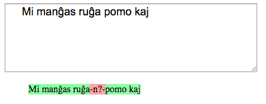
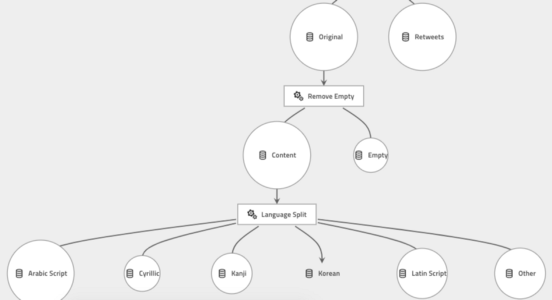
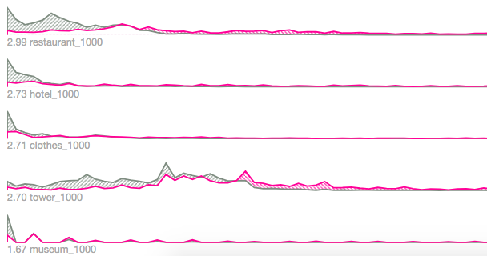
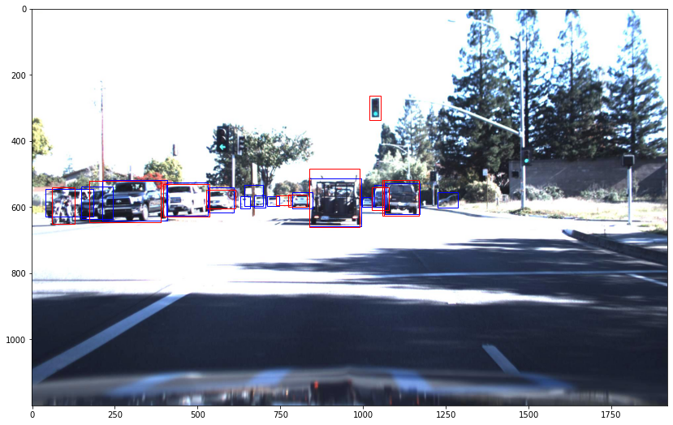

Nick Doiron / @mapmeld ML Portfolio
No handwritten digits or irises here, just brand new projects
Language
-
Hindi-Bert -
uploaded the first Hindi-specific Transformers model on HuggingFace; pretrained with Google ELECTRA
on OSCAR CommonCrawl and latest Wikipedia. Finetuning showed better results than Multilingual BERT
on Hindi movie review and BBC topic-identification datasets.
Why monolingual models? -
code - blog post
- training CoLab
- SimpleTransformers vs. finetuned ELECTRA - Transformers benchmark
-
Arabic NLP -
multiple projects:
comparing sentiment analysis libraries,
applying FastText embeddings,
evaluating AWS Comprehend,
and training predictive models on
multiple Arabic dialect datasets
(notebook)
-
Esperanto LSTM -
trained on a Wikipedia corpus; generated text was nonsensical, but grammatical correctness was ultimately useful for editing Wikipedia
blog post - code

Social Media
-
AOC Reply Dataset -
scraped 110k Twitter replies to Congresswoman @AOC, explored dataset with weakly supervised troll detection,
first with Google AutoML, then later with
SciKit-Learn
and
GPT-2
. I continue to collaborate with researchers who analyze
this dataset.
dataset
- blog post
-
DeepClapback -
downloaded Reddit comments into PostgreSQL to find short replies which greatly outscored their parent (for example: "[citation needed]")
and predict the best response to any post.
Used Google AutoML.
blog post
-
Data Engineering with Kedro -
re-labeling Twitter disinfo data releases by language, using data pipeline library Kedro with new visualizations (see below)
blog post - code

Tabular Data
-
Student Dropout Contract -
processed 11 million rows of student records into a PostGIS database on contract with the Inter-American Development Bank.
Developed a data visualization (map and dashboard).
SciKit-Learn (Bayesian Ridge, XGBoost) to model dropout rates, crime rates, and nearby geography (from OpenStreetMap), and school stats.
Used ELI5 to measure significance of each column.
Dropout rate was not very predictable, especially in smaller rural schools (where one student leaving = 20% dropout rate),
but we found a key point is when students must change schools to enter 7th grade.
code
-
Airbnb Price Prediction with AutoKeras -
Trained a model using Airbnb prices and OpenStreetMap local data. Used Uber's Manifold to visualize the significance of each column (see below).
blog post - notebook

Object Detection
-
Finding errors in self-driving car dataset -
based on this Computer Vision project, but instead of repairing Udacity's dataset manually, I compared
results from the original dataset, YOLO out-of-the-box, and (to-be-completed) a finetuned model.
notebook - blog post

I scanned for frames where pedestrians were unlabeled; YOLOv3 detected mostly false positives, but also noticed this motorcyclist who was missing from Udacity/CrowdAI dataset
Non-ML Coding
I'm a full-stack developer with geospatial experience. Previously I worked in a Software Engineer / Data Scientist role at McKinsey & Company, and
as an open data expert for Code for America, the City of Boston, ESRI, and the Asia Foundation.
GitHub: I've contributed to
Fortran.IO,
AutoKeras examples,
OpenStreetMap (osm.org and iD Editor),
NextStrain,
a quantum computing library,
and a cryptocurrency wallet.
Writing and Outreach
I participated in an AI and International Law workshop at the Asser Instituut in The Hague.
It was a good view of AI/ML from a legal and ethical perspective:
blog post
In recent years I conducted data visualization and PostGIS workshops at PyCon India, PyCon Zimbabwe, and refugee code schools in Turkey and Iraqi Kurdistan.